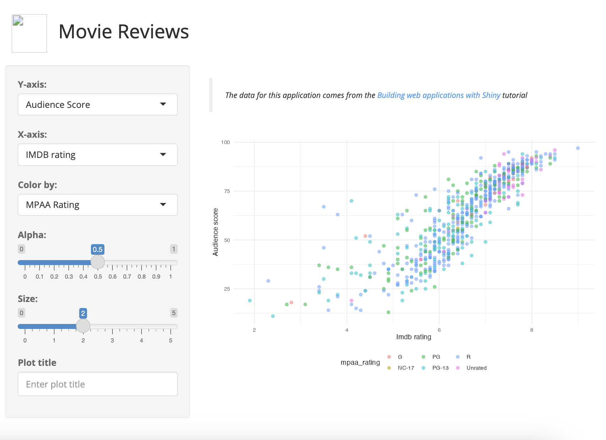

movies_app(run = 'p')9 External files
In this chapter we’ll cover how to add external resources (i.e., files previously stored and served from the www/ folder) to your app-package, and how to store and run multiple applications.
Install the shinypak package to easily launch the applications:
install.packages('pak')
library(pak)
pak('mjfrigaard/shinypak')9.1 What happened to our icon image?
When we launch our app using the standalone app function, we see the following:

movies_app() without logowww/shiny.png is not accessible when we launch the appThe shiny.png logo in www/ is not being loaded into the UI when the application is launched. Serving the contents of www was previously being handled automatically by the Shiny framework, but now that moviesApp is an R package, we’ll need to explicitly tell the application where to find these resources.1
9.2 Our app-package files
While developing, we are used to interacting with our app-package from the Files pane:

moviesApp in Files paneHowever, when we run install() (or use Ctrl/Cmd + Shift + B), the output in the Build pane gives us the location of our installed package:
==> R CMD INSTALL --preclean --no-multiarch --with-keep.source moviesApp
* installing to library ‘/path/to/installed/package/moviesApp/’
* installing *source* package ‘moviesApp’ ...
** using staged installation
** R
** data
*** moving datasets to lazyload DB
** inst
** byte-compile and prepare package for lazy loading
** help
*** installing help indices
** building package indices
** testing if installed package can be loaded from temporary location
** testing if installed package can be loaded from final location
** testing if installed package keeps a record of temporary installation path
* DONE - 1
-
This is the location of the installed version of
moviesApp
9.3 Our app-package … installed
If we were to moviesApp to the path above, we’d see the files and folders in our installed package. Below are folder trees for our source package and our installed package:2
source/moviesApp/
├── DESCRIPTION
├── NAMESPACE
├── R
│ ├── data.R
│ ├── display_type.R
│ ├── mod_scatter_display.R
│ ├── mod_var_input.R
│ ├── movies_app.R
│ ├── movies_server.R
│ ├── movies_ui.R
│ └── scatter_plot.R
├── README.md
├── app.R
├── data
│ ├── movies.RData
│ └── movies.rda
├── inst
│ └── extdata
│ └── movies.fst
├── man
│ ├── display_type.Rd
│ ├── mod_scatter_display_server.Rd
│ ├── mod_scatter_display_ui.Rd
│ ├── mod_var_input_server.Rd
│ ├── mod_var_input_ui.Rd
│ ├── movies.Rd
│ ├── movies_app.Rd
│ ├── movies_server.Rd
│ ├── movies_ui.Rd
│ └── scatter_plot.Rd
├── moviesApp.Rproj
└── www
└── shiny.pnginstalled/moviesApp/
├── DESCRIPTION
├── INDEX
├── Meta
│ ├── Rd.rds
│ ├── data.rds
│ ├── features.rds
│ ├── hsearch.rds
│ ├── links.rds
│ ├── nsInfo.rds
│ └── package.rds
├── NAMESPACE
├── R
│ ├── moviesApp
│ ├── moviesApp.rdb
│ └── moviesApp.rdx
├── data
│ ├── Rdata.rdb
│ ├── Rdata.rds
│ └── Rdata.rdx
├── extdata
│ └── movies.fst
├── help
│ ├── AnIndex
│ ├── aliases.rds
│ ├── moviesApp.rdb
│ ├── moviesApp.rdx
│ └── paths.rds
└── html
├── 00Index.html
└── R.cssThe installed version of moviesApp has many of the same files as the ‘source’ version we’ve been working with (i.e., NAMESPACE and DESCRIPTION). It also might surprise you to see that many of the source files aren’t included in the installed version of moviesApp (.R, .Rd files. etc.).
Viewing the contents of your installed package should help demystify what happens when we run devtools::install() and give you a better idea of how system.file() works.3
“The contents of the
inst/subdirectory will be copied recursively to the installation directory. Subdirectories ofinst/should not interfere with those used by R (currently,R/,data/,demo/,exec/,libs/,man/,help/,html/andMeta/, and earlier versions usedlatex/,R-ex/).” - Writing R extensions, Package subdirectories
9.4 system.file()
system.file() gives us access to the package files on installation (i.e., the files we saw in the folder tree above). In the data chapter, we used system.file() to access the movies.fst file in inst/extdata/:
fst::read_fst(
path = system.file("extdata/", "movies.fst",
package = "moviesApp")
)As we can see, the movies.fst has two locations: the ‘source’ package location, and the ‘installed’ location.
9.4.0.1 Source package files
inst/
└── extdata/
└── movies.fst9.4.0.2 Installed package files
└── extdata/
└── movies.fstsystem.file() is accessing movies.fst from the installed location.4
To include the contents of www/ in our app-package, we’ll need to move www/ into inst/, then access it’s contents with system.file() and addResourcePath().
9.5 addResourcePath()
The addResourcePath() function will add a “directory of static resources to Shiny’s web server.” In moviesApp, want to add the www directory that includes the shiny.png file.5
9.5.0.1 Current www location
├── inst
│ └── extdata
│ └── movies.fst
└── www
└── shiny.png
9.5.0.2 New www location
inst/
├── extdata/
│ └── movies.fst
└── www/
└── shiny.pngIn R/movies_ui.R function, we’ll include the addResourcePath() at the top of the tagList() and reference the image in img() using only the subfolder in the path:
movies_ui <- function() {
addResourcePath(
prefix = 'www',
directoryPath = system.file('www', package = 'moviesApp'))
tagList(
fluidPage(
theme = shinythemes::shinytheme("spacelab"),
titlePanel(
div(
img(
src = "www/shiny.png",
height = 60,
width = 55,
style = "margin:10px 10px"
),
"Movie Reviews"
)
),
sidebarLayout(
sidebarPanel(
mod_var_input_ui("vars")
),
mainPanel(
mod_scatter_display_ui("plot")
)
)
)
)
} - 1
-
Prefix (or folder name) of installed location
- 2
-
Path to installed package files
- 3
- Reference to installed package image file
After loading, documenting, and installing, the application now includes the image file.
Ctrl/Cmd + Shift + L / D / B
Launch app with the shinypak package:
launch('09.1_inst-www')library(moviesApp)
movies_app(run = 'p')
movies_app() with logoinst/www accessible with addResourcePath()9.6 App versions with inst/
The inst/ folder can also be used to store files we’re using in alternate versions of our application. This can include alternate images, CSS styling, JS scripts, data files, or even entirely different apps!
9.6.1 Alternate UI layouts with bslib
We can use inst/ to store alternative files and configure our UI function to test different layouts. In the example below, I’ve included a second optional UI layout from the bslib package in movies_ui().
The bslib argument includes an alternate image file (stored in inst/www/bootstrap.png):
show/hide movies_ui()
movies_ui <- function(bslib = FALSE) {
addResourcePath(
prefix = 'www',
directoryPath = system.file('www', package = 'moviesApp'))
if (isFALSE(bslib)) {
tagList(
fluidPage(
theme = shinythemes::shinytheme("spacelab"),
titlePanel(
div(
img(
src = "www/shiny.png",
height = 60,
width = 55,
style = "margin:10px 10px"
),
"Movie Reviews"
)
),
sidebarLayout(
sidebarPanel(
mod_var_input_ui("vars")
),
mainPanel(
mod_scatter_display_ui("plot")
)
)
)
)
} else {
tagList(
bslib::page_fillable(
title = "Movie Reviews (bslib)",
theme = bslib::bs_theme(
bg = "#101010",
fg = "#F6F5F5",
primary = "#EE6F57",
secondary = "#32E0C4",
success = "#FF4B5C",
base_font = sass::font_google("Ubuntu"),
heading_font = sass::font_google("Ubuntu")
),
bslib::layout_sidebar(
sidebar = bslib::sidebar(
open = TRUE,
mod_var_input_ui("vars")
),
bslib::card(
full_screen = TRUE,
bslib::card_header(
img(src = "www/bootstrap.png",
height = 80,
width = 100,
style = "margin:10px 10px")
),
bslib::card_body(
div(
mod_scatter_display_ui("plot")
)
)
)
)
)
)
}
} - 1
-
Include
inst/wwwresources
- 2
-
Standard
fluidPage()
- 3
-
bsliblayout
- 4
-
Reference to alternate image (
bootstrap.png)
Ctrl/Cmd + Shift + L / D / B
Launch app with the shinypak package:
launch('09.2_inst-bslib')This alternate version of movies_app() uses the same modules and utility functions as the previous versions, but when bslib = TRUE, the app displays the alternate UI layout:
movies_app(run = 'p', bslib = TRUE)
movies_app() with logoinst/www/bootstrap.png image from movies_ui()The example above was a simple, but using inst/ to hold alternate features (i.e., images or custom .html, .css, .sass, .js code) that can be easily displayed with an optional argument is a great tool for demonstrating features to users and stakeholders.
9.6.2 Alternate data in dev/
It’s not uncommon to be working on multiple ‘development’ versions of an application in the same package. In these situations, we might want to begin developing our application in the inst/dev folder:
inst/dev/
├── app.R
├── tidy_movies.fst
└── imdb.png
1 directory, 3 files9.6.2.1 dev/ data
The ‘development’ application in moviesApp uses a tidy version of the ggplot2movies::movies data, which we created in the data-raw/tidy_movies.R file.6
show/hide data-raw/tidy_movies.R
## code to prepare `ggp2movies` dataset goes here
# pkgs <- c('ggplot2movies', 'tidyr', 'dplyr', 'stringr', 'fst')
# install.packages(pkgs, quiet = TRUE)
# load packages --------------------
library(tidyr)
library(dplyr)
library(stringr)
library(fst)
# tidy_movies
tidy_movies <- ggplot2movies::movies |>
tidyr::pivot_longer(c(Action:Short),
names_to = "genre_key",
values_to = "genre_value"
) |>
dplyr::mutate(genre_value = as.logical(genre_value)) |>
dplyr::select(
title, genre_key, genre_value, length,
year, budget, avg_rating = rating, votes, mpaa
) |>
dplyr::filter(genre_value == TRUE) |>
dplyr::group_by(title) |>
dplyr:::mutate(
genres = paste0(genre_key, collapse = ", ")
) |>
dplyr::select(
title, genres, length, year,
budget, avg_rating, votes, mpaa
) |>
dplyr::ungroup() |>
dplyr::distinct(.keep_all = TRUE) |>
dplyr::mutate(
genres = dplyr::na_if(x = genres, ""),
genre = dplyr::case_when(
stringr::str_detect(genres, ",") ~ 'Multiple genres',
TRUE ~ genres),
genre = factor(genre),
mpaa = dplyr::na_if(x = mpaa, y = ""),
mpaa = factor(mpaa,
levels = c("G", "PG", "PG-13", "R", "NC-17"),
labels = c("G", "PG", "PG-13", "R", "NC-17"))
) |>
dplyr::select(-genres)
# save to inst/dev/
fst::write_fst(x = tidy_movies, path = "inst/dev/tidy_movies.fst")9.6.2.2 dev/ code
In inst/dev/, we’ve placed the application modules in an app.R file. Any of the functions from moviesApp can be used in the dev/ modules with explicit namespacing (i.e., moviesApp::scatter_plot()).
dev_mod_vars_ui() contains choices for the names in the tidy_movies data, but there’s no need to re-write the mod_var_input_server() function.
show/hide dev_mod_vars_ui()
dev_mod_vars_ui <- function(id) {
ns <- NS(id)
tagList(
textInput(
inputId = ns("plot_title"),
label = "Plot title",
placeholder = "Enter plot title"
),
selectInput(
inputId = ns("y"),
label = "Y-axis:",
choices = c(
"Year" = "year",
"Length" = "length",
"Budget" = "budget",
"Rating" = "avg_rating",
"Votes" = "votes"
),
selected = "budget"
),
selectInput(
inputId = ns("x"),
label = "X-axis:",
choices = c(
"Year" = "year",
"Length" = "length",
"Budget" = "budget",
"Rating" = "avg_rating",
"Votes" = "votes"
),
selected = "year"
),
selectInput(
inputId = ns("z"),
label = "Color by:",
choices = c(
"MPAA" = "mpaa",
"Genre" = "genre"
),
selected = "mpaa"
),
sliderInput(
inputId = ns("alpha"),
label = "Alpha:",
min = 0, max = 1, step = 0.1,
value = 0.4
),
sliderInput(
inputId = ns("size"),
label = "Size:",
min = 0, max = 5, step = 0.5,
value = 2.5
)
)
}Both functions in the dev/ display module has been re-written to add functionality for importing the tidy_movies.fst data file and an option to removing missing values from the graph.
show/hide dev_mod_scatter_ui()
dev_mod_scatter_ui <- function(id) {
ns <- NS(id)
tagList(
tags$br(),
tags$blockquote(
tags$em(
tags$h6(
"The data for this application comes from the ",
tags$a("ggplot2movies",
href = "https://github.com/hadley/ggplot2movies"
),
"package"
)
)
),
tags$div(
checkboxInput(
inputId = ns("missing"),
label = "Remove missing",
value = TRUE
),
plotOutput(outputId = ns("scatterplot"))
)
)
}- 1
-
Alternate help text for
ggplot2moviesdata
- 2
- Check-box to remove missing values
show/hide dev_mod_scatter_server()
dev_mod_scatter_server <- function(id, var_inputs) {
moduleServer(id, function(input, output, session) {
# load alternate data
all_data <- fst::read_fst("tidy_movies.fst")
graph_data <- reactive({
if (input$missing) {
graph_data <- tidyr::drop_na(data = all_data)
} else {
graph_data <- all_data
}
}) |>
bindEvent(input$missing)
inputs <- reactive({
plot_title <- tools::toTitleCase(var_inputs()$plot_title)
list(
x = var_inputs()$x,
y = var_inputs()$y,
z = var_inputs()$z,
alpha = var_inputs()$alpha,
size = var_inputs()$size,
plot_title = plot_title
)
})
observe({
output$scatterplot <- renderPlot({
plot <- moviesApp::scatter_plot(
df = graph_data(),
x_var = inputs()$x,
y_var = inputs()$y,
col_var = inputs()$z,
alpha_var = inputs()$alpha,
size_var = inputs()$size
)
plot +
ggplot2::labs(
title = inputs()$plot_title,
x = stringr::str_replace_all(
tools::toTitleCase(inputs()$x), "_", " "),
y = stringr::str_replace_all(
tools::toTitleCase(inputs()$y), "_", " ")
) +
ggplot2::theme_minimal() +
ggplot2::theme(legend.position = "bottom")
})
}) |>
bindEvent(graph_data(), inputs())
})
}- 1
-
Build reactive data based on missing checkbox input
- 2
-
Bind
missinginput to update when UI changes
- 3
- Bind plot output to update with variable inputs and ‘missing’ checkbox output
app.R also contains development app UI and server functions.
In devUI(), development modules are paired with package modules (dev_mod_vars_ui() and moviesApp::mod_var_input_server()), and we’ve include an alternate image (bootstrap.png).7
show/hide devUI()
devUI <- function() {
addResourcePath(
prefix = "dev",
directoryPath = system.file("dev",
package = "moviesApp")
)
tagList(
bslib::page_fillable(
title = "Movie Reviews (ggplot2movies)",
theme = bslib::bs_theme(
bg = "#043b67",
fg = "#ffffff",
primary = "#ffcf22",
secondary = "#38B44A",
success = "#32E0C4",
base_font = sass::font_google("Ubuntu"),
heading_font = sass::font_google("Ubuntu")
),
bslib::layout_sidebar(
sidebar = bslib::sidebar(
dev_mod_vars_ui("vars")
),
bslib::card(
full_screen = TRUE,
bslib::card_header(
tags$div(
tags$img(
src = "dev/imdb.png",
height = 80,
width = 110,
style = "margin:10px 10px"
)
)
),
bslib::card_body(
dev_mod_scatter_ui("plot")
)
)
)
)
)
}- 1
- Add alternate path to include image file
- 2
-
Development variable input module (UI)
- 3
-
Refer to alternate image
- 4
- Development scatter-plot display module (UI)
show/hide devServer()
devServer <- function(input, output, session) {
selected_vars <- moviesApp::mod_var_input_server("vars")
dev_mod_scatter_server("plot", var_inputs = selected_vars)
}- 1
-
mod_var_input_server()exported frommoviesApp’sR/folder - 2
-
Defined in
dev/inst/app.R
9.6.2.3 Launch inst/dev/
Finally, the development app is launched with it’s own standalone function (stored in R/ggp2_movies_app.R). The ggp2_movies_app() function is similar to movies_app(), but appDir is set to the location of the development files (which we provide with system.file()).

This section’s code is in the 09.3_inst-dev branch of moviesApp.
show/hide R/ggp2_movies_app.R
#' Development `ggplot2movies` app standalone function
#'
#' Wrapper function for `shinyAppDir()`
#'
#' @param test logical, run in `test.mode`? Defaults to `TRUE`.
#'
#' @return shiny app
#'
#'
#' @export
ggp2_movies_app <- function(options = list(), run = "w") {
if (interactive()) {
display_type(run = run)
}
shinyAppDir(
appDir = system.file("dev",
package = "moviesApp"
),
options = options
)
}After loading, documenting, and installing moviesApp, we can run the development version using ggplot2movies_app():
Launch app with the shinypak package:
launch('09.3_inst-dev')Ctrl/Cmd + Shift + L / D / B
ggp2_movies_app(run = 'p')
ggplot2movies_app()inst/dev/ app with dev_movies_ui()You may have noticed that I’ve used a different color and theme for the two development examples above. I’ve found this can be a quick and easy way to differentiate ‘development’ and ‘production’ versions of an application.
9.6.3 prod/ versions
It’s also possible to have a folder dedicated for deploying your application in your app-package.
9.6.3.1 prod/app/ data
This folder can be named something like inst/prod/ or inst/deploy, and it will contain the ‘production’ ready versions of UI and server functions in a single app.R file:
inst/
└── prod/
└── app
└── app.R
2 directories, 1 file9.6.3.2 prod/app/app.R data
In the app.R file, include only a call to shinyApp() with the ui and server function (explicitly namespaced from your app-package):
show/hide prod/app/app.R
shinyApp(
ui = moviesApp::movies_ui(bslib = TRUE),
server = moviesApp::movies_server)I used the bslib version, just to differentiate it from the other applications in moviesApp.
9.6.3.3 Deploying inst/prod/app/
Back in the root app.R file, we’ll use shinyAppDir() and system.file() to return the app object from prod/app/app.R:
show/hide app.R
# set option to turn off loadSupport() ----
withr::with_options(new = list(shiny.autoload.r = FALSE), code = {
if (!interactive()) {
sink(stderr(), type = "output")
tryCatch(
expr = {
# load package ----
library(moviesApp)
},
error = function(e) {
# load R/ folder ----
pkgload::load_all()
}
)
# create shiny object from prod/app ----
shinyAppDir(appDir =
system.file("prod/app", package = "moviesApp"))
} else {
# load R/ folder ----
pkgload::load_all()
# create shiny object ----
shiny::shinyApp(
ui = movies_ui,
server = movies_server
)
}
})Ctrl/Cmd + Shift + L / D / B
To deploy the app, call rsconnect::deployApp() in the console.
rsconnect::deployApp(appName = 'shinyapppkg')The deployment log will look something like this:
── Preparing for deployment ────────────────────────────────────────────
✔ Re-deploying "shinyapppkg" to "server: shinyapps.io / username: yourusername"
ℹ Looking up application with id "10047601"...
✔ Found application <https://mjfrigaard.shinyapps.io/shinyapppkg/>
ℹ Bundling 35 files: .Rbuildignore, app.R, data/movies.rda, data/movies.RData,
data-raw/tidy_movies.R, DESCRIPTION, inst/dev/app.R, inst/dev/imdb.png,
inst/dev/tidy_movies.fst, inst/extdata/movies.fst, inst/prod/app/app.R,
inst/www/bootstrap.png, inst/www/shiny.png, man/display_type.Rd,
man/ggp2_movies_app.Rd, man/mod_scatter_display_server.Rd,
man/mod_scatter_display_ui.Rd, man/mod_var_input_server.Rd, …,
R/scatter_plot.R, and README.md
ℹ Capturing R dependencies with renv
✔ Found 72 dependencies
✔ Created 1,179,590b bundle
ℹ Uploading bundle...
✔ Uploaded bundle with id 7749936
── Deploying to server ────────────────────────────────────────────────────────────────────
Waiting for task: 1341341295
building: Parsing manifest
building: Building image: 9226179
building: Fetching packages
building: Installing packages
building: Installing files
building: Pushing image: 9226179
deploying: Starting instances
rollforward: Activating new instances
terminating: Stopping old instances
── Deployment complete ───────────────────────────────────────────
✔ Successfully deployed to <https://mjfrigaard.shinyapps.io/shinyapppkg/>You can see a deployed version of this application here
This section’s code is in the 09.4_inst-prod branch of moviesApp.
Uses of
inst/ in other packages
You can explore the structure of other installed packages to see how they work ‘under the hood’ to gain insight into how they use the inst/ folder.
For example, the
inst/extdata/folder in thereadrpackage holds a variety of datasets:/path/to/install/Library/R/x86_64/4.2/library/readr/ extdata/ ├── challenge.csv ├── chickens.csv ├── epa78.txt ├── example.log ├── fwf-sample.txt ├── massey-rating.txt ├── mini-gapminder-africa.csv ├── mini-gapminder-americas.csv ├── mini-gapminder-asia.csv ├── mini-gapminder-europe.csv ├── mini-gapminder-oceania.csv ├── mtcars.csv ├── mtcars.csv.bz2 ├── mtcars.csv.zip └── whitespace-sample.txt 1 directory, 15 filesThese files are used in
readr::readr_example()):#' Get path to readr example #' #' readr comes bundled with a number of sample files in its `inst/extdata` #' directory. This function make them easy to access #' #' @param file Name of file. If `NULL`, the example files will be listed. #' @export #' @examples #' readr_example() #' readr_example('challenge.csv') readr_example <- function(file = NULL) { if (is.null(file)) { dir(system.file('extdata', package = 'readr')) } else { system.file('extdata', file, package = 'readr', mustWork = TRUE) } }
9.7 Recap
This chapter had covered how to include external files and resources (i.e., what was previously stored in the www/ folder of a regular shiny app project) in your app-package with addResourcePath() and system.file().
We’ve also covered how to use the inst/ folder to include alternative files, development and production/deployment versions of your app. You can now launch the following applications from moviesApp:
Standard application with/without test mode
library(moviesApp)
movies_app(options = list(test.mode = TRUE))
# or
movies_app(options = list(test.mode = FALSE))blisb application with/without test mode
library(moviesApp)
movies_app(options = list(test.mode = TRUE), bslib = TRUE)
# or
movies_app(options = list(test.mode = FALSE), bslib = TRUE) ggplot2movies data application with/without test mode
library(moviesApp)
ggp2_movies_app(options = list(test.mode = TRUE))
# or
ggp2_movies_app(options = list(test.mode = FALSE))prod/ application
library(moviesApp)
rsconnect::deployApp()In the next chapter, we’re going to cover testing the code in your shiny app-package.
Recap:
inst & www folders
inst/: theinst/folder is installed with your app-package and will be accessible to users, so it’s a great location for files you want contained in your app, but don’t fit into the standard R package structure.inst/is also a great location for alternative versions of applications (i.e.,inst/app/devorinst/app/prod/).
system.file(): constructs a path to files or folders within installed packages and is especially useful when working with external datasets (i.e.,inst/extdata/) or other external resources included with your app-package (i.e.,inst/www/).www: used for external static resources in shiny apps. shiny will automatically serve files under thewww/directory, but in app-packages we need to explicitly set this location withshiny::addResourcePath()addResourcePath(): create aprefix(i.e., path) for adirectoryPathof static files to accessible in shiny’s web server:# file location inst/ └── www/ └── shiny.png# add path to app addResourcePath(prefix = 'www', directoryPath = system.file('www', package = 'moviesApp')) # use path without 'inst/' prefix shiny::img(src = 'www/shiny.png')
This is a common problem developers encounter when converting shiny app into app-packages. See this popular thread on Posit Community.↩︎
fs::path_package(package = "moviesApp")returns the path to your installed package andfs::dir_tree()function will print a folder tree.↩︎Read more about sub-directories to avoid in
inst/in R Packages, 2ed.↩︎The key takeaway here is that the
inst/subfolders and files are available unchanged in the installed version (with theinst/folder omitted.).↩︎You can read more about adding external resources in the documentation for
addResourcePath().↩︎We covered the
data-raw/folder in the Data chapter, and you can read more about it here in R packages, 2ed↩︎This requires exporting
mod_var_input_server()with@exportin theR/folder.↩︎